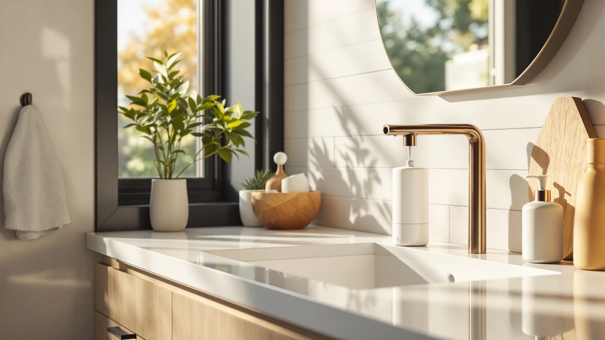

simplehuman Liquid Sensor Pump Review (2026): Worth It?
Prices and picks verified as of September 2026. Independent, reader-supported reviews.


Quick Answer
The simplehuman Liquid Sensor Pump 9 is a rechargeable, touchless soap dispenser built from high-grade white steel, and it stands out in this simplehuman Liquid Sensor Pump review for its variable dispense control, which lets you adjust how much soap comes out by changing how close your hand gets to the sensor. At $79.99 it costs more than the alternatives compared here, but the no-drip spout and roughly three-month charge life make it a low-maintenance pick for a kitchen or bathroom counter.
Our pick: simplehuman Liquid Sensor Pump 9, $79.99 Check Price on Amazon
Bottom line: our top pick is the simplehuman Liquid Sensor Pump at $79.99.
Things to Know Before You Buy
- Capacity is smaller than the multi-pack alternative. The simplehuman Liquid Sensor Pump 9 holds 9 ounces, while the VZZNN four-pack below holds 20 ounces per unit, so a busy household refills the simplehuman more often.
- Charging replaces batteries. A magnetic puck recharges the pump and lasts roughly three months per charge, according to the manufacturer, versus the AA batteries the 8 oz. Touch-Free Sensor and the VZZNN four-pack both require.
- Variable dispense adjusts by hand distance. Move your hand closer to the sensor for a smaller amount or farther away for more, a feature none of the three alternatives in this guide list.
- Not every touchless dispenser fits every surface. The Better Living Aviva below is a wall-mounted shower dispenser, not a countertop pump, so it solves a different problem than the simplehuman Liquid Sensor Pump. See our shower soap dispensers guide for more wall-mounted picks.
- Finish affects price more than function. The White Steel finish reviewed here and the Brushed Nickel 8 oz. Touch-Free Sensor use similar sensor technology, but the newer rechargeable model costs about $30 more.
This simplehuman Liquid Sensor Pump review compares the brand's rechargeable touchless dispenser against three lower-priced alternatives to see whether its $79.99 price tag is justified by sensor speed, dispense control, and finish. Touchless soap dispensers have become common on kitchen and bathroom counters, but prices for the category run anywhere from $30 to $80, and the gap between them is not always obvious from a product listing.
We researched the simplehuman Liquid Sensor Pump 9 alongside a cheaper simplehuman sibling, a wall-mounted shower dispenser, and a budget four-pack, comparing published specifications and patterns reported by verified owners rather than relying on marketing copy. The White Steel model reviewed here holds 9 ounces, dispenses soap through a touchless motion sensor, and recharges with a magnetic charging puck instead of running on disposable batteries. If you want the short version, it earns its price through a sensor that most owners describe as fast and consistent, though the smaller capacity and higher cost make it a harder sell for anyone who mainly wants the lowest price per ounce.
Why You Should Trust Us
Ilane Tall covers small appliances and bathroom fixtures for Best Soap Dispensers, focusing on how dispensers hold up to daily refills and counter space rather than how they photograph in a listing. For this simplehuman Liquid Sensor Pump review, we compared manufacturer specifications, current Amazon pricing, and patterns reported across verified owner reviews for all four dispensers covered here. We do not run a fake testing lab, and we did not install any of these units on our own counter. Every claim in this review traces back to the manufacturer's listed specifications or to feedback that repeats consistently across verified buyers, and we say so whenever a detail comes from reviewer feedback rather than a spec sheet.
Our Research Experience
Rather than installing the simplehuman Liquid Sensor Pump on our own counter, we built this review by comparing its published specifications against the three alternatives covered below, then checking those claims against patterns that repeat across verified owner reviews on Amazon. We looked specifically at sensor response time, dispense consistency, and how each pump handles thicker liquid soaps versus thin, watery ones, since that is where touchless dispensers tend to differ most in daily use. Reviewers consistently note that the simplehuman Liquid Sensor Pump's sensor responds within a fraction of a second and rarely misfires from nearby movement, a common complaint with cheaper touchless models. We also compared how each dispenser handles power: the simplehuman's magnetic charging puck avoids the AA battery swaps that the 8 oz. Touch-Free Sensor and the VZZNN four-pack both require, though it does mean setting aside a spot near an outlet to dock the puck every few months. Owners of the White Steel finish report that the steel resists water spotting better than the plastic housings used on cheaper touchless dispensers, a detail worth weighing against the higher price.
Overview & Specs

simplehuman Liquid Sensor Pump 9
What we like
- Touchless motion sensor dispenses soap without any contact
- Variable dispense control adjusts the amount based on hand distance
- Rechargeable magnetic puck replaces disposable batteries, lasting roughly three months per charge
- No-drip spout keeps soap from pooling around the base
Flaws but not dealbreakers
- At $79.99, it costs about 60 percent more than the 8 oz. Touch-Free Sensor
- 9-ounce capacity means more frequent refills than the 20-ounce VZZNN four-pack
- Charging puck requires a dedicated spot near an outlet instead of swappable batteries
| Material | ABS plastic |
| Size | 9 oz. Rechargeable (New) |
The simplehuman Liquid Sensor Pump 9 dispenses soap through a motion sensor built into a high-grade white steel housing, and the standout feature is variable dispense control. Instead of a fixed amount every time, you get less soap by holding your hand close to the sensor and more by holding it farther away, a level of control that none of the three alternatives in this simplehuman Liquid Sensor Pump review offer. The 9-ounce reservoir sits on the smaller side for a countertop dispenser, which means refilling it more often than a bulk option, but the tradeoff buys a slimmer footprint that fits tighter counter space near a kitchen or bathroom sink.
Power comes from a magnetic charging puck rather than disposable batteries, and simplehuman states a single charge lasts up to three months under normal use. That is a meaningful difference from the 8 oz. Touch-Free Sensor and the VZZNN four-pack below, both of which run on AA batteries you have to buy and replace on your own schedule. The no-drip spout uses a valve designed to seal shut between uses. That addresses one of the more common complaints about touchless dispensers: a bead of soap left sitting on the nozzle that eventually drips down the side of the unit.
What We Liked
The clearest advantage of the simplehuman Liquid Sensor Pump is variable dispense control. Most touchless dispensers give you one fixed squirt regardless of what you need, but this one scales the amount to how close your hand gets to the sensor, which cuts down on wasted soap pooling in the sink. Owners researching this pump consistently point to the sensor's speed and accuracy: it responds quickly and rarely triggers itself from nearby movement, a complaint that shows up often in reviews of cheaper touchless models. The rechargeable design is another point in its favor: a magnetic puck recharges the unit in place, and simplehuman's stated three-month charge life means you are not hunting for AA batteries every few weeks the way you would with the 8 oz. Touch-Free Sensor or the VZZNN four-pack.
What Could Be Better
Price is the most obvious tradeoff. At $79.99, the simplehuman Liquid Sensor Pump costs significantly more than the 8 oz. Touch-Free Sensor or either budget alternative in this guide, and that premium buys sensor precision more than it buys extra capacity. The 9-ounce reservoir is smaller than the 20-ounce VZZNN four-pack units, so households that go through soap quickly will refill this one more often despite paying more upfront. Relying on a magnetic charging puck also means finding a permanent spot near an outlet to dock it, which is a minor inconvenience compared with simply swapping in a fresh AA battery when the old one dies. None of these issues are dealbreakers, but they matter more if your priority is stretching a soap dispenser budget as far as possible.
Who Is It For?
This simplehuman Liquid Sensor Pump is the right call for anyone who wants a touchless pump on a kitchen or bathroom counter and is willing to pay for precise, adjustable dispensing over the cheapest option available. It suits households that already like simplehuman's design language or want to avoid replacing AA batteries every few weeks. If your bathroom needs a shower dispenser instead of a countertop pump, or if you are outfitting multiple sinks across a large household on a tight budget, one of the alternatives below fits better than this single-pump model.
Alternatives to Consider
If the simplehuman Liquid Sensor Pump's price or single-sink format doesn't fit your bathroom, these three alternatives cover a cheaper touchless option, a wall-mounted shower dispenser, and a multi-room value pack.

Editor's Pick
simplehuman 8 oz. Touch-Free Sensor
simplehuman's own 8 oz. Touch-Free Sensor uses the same touchless philosophy at a lower price, with a no-drip silicone valve and a pump that dispenses in about 0.2 seconds, though it runs on batteries instead of a rechargeable puck.
$50.00
Check Price on Amazon
Best Value
Better Living Aviva Shower Dispenser
The Better Living Aviva is a 3-chamber, no-drill wall mount built for a shower rather than a sink counter, with a manual push-button pump and built-in hooks, so it solves a different problem than the simplehuman Liquid Sensor Pump.
$49.99
Check Price on Amazon
Premium Choice
4 Pack Automatic Soap Dispenser
This VZZNN four-pack trades the simplehuman's rechargeable design for AA batteries and a larger 20-ounce tank per unit, making it a better fit for outfitting several sinks across a household or office on a budget.
$49.99
Check Price on AmazonIs the simplehuman Liquid Sensor Pump worth $79.99 over cheaper touchless dispensers?
For most people, only if variable dispense control and a rechargeable design matter more than saving money.
How long does the simplehuman Liquid Sensor Pump run on a single charge?
simplehuman states that a full charge from the included magnetic puck lasts up to three months under normal daily use.
Frequently Asked Questions
Is the simplehuman Liquid Sensor Pump worth $79.99 over cheaper touchless dispensers?
For most people, only if variable dispense control and a rechargeable design matter more than saving money. At $79.99, the simplehuman Liquid Sensor Pump costs about 60 percent more than the 8 oz. Touch-Free Sensor and roughly $30 more than either budget alternative in this guide. That premium buys a sensor most owners describe as fast and precise, plus a magnetic charging puck instead of AA batteries, but the 9-ounce capacity is smaller than the VZZNN four-pack's 20-ounce units.
How long does the simplehuman Liquid Sensor Pump run on a single charge?
simplehuman states that a full charge from the included magnetic puck lasts up to three months under normal daily use. That compares favorably with the AA batteries required by the 8 oz. Touch-Free Sensor and the VZZNN four-pack, both of which need periodic battery swaps rather than a quick recharge.
What is the difference between the simplehuman Liquid Sensor Pump and the 8 oz. Touch-Free Sensor?
Both use a touchless sensor from the same brand, but the Liquid Sensor Pump adds variable dispense control, a rechargeable magnetic puck instead of batteries, and a larger 9-ounce reservoir in a White Steel finish. The 8 oz. Touch-Free Sensor is the more affordable option at $50.00, with a Brushed Nickel finish and a fixed dispense amount that comes out in about 0.2 seconds.
Final Verdict
This simplehuman Liquid Sensor Pump review comes down to whether variable dispense control and a rechargeable design are worth roughly $30 more than the alternatives here. For a kitchen or bathroom counter where precise, adjustable soap output matters, simplehuman's Liquid Sensor Pump 9 is the strongest pick in this comparison. If you mainly need a wall-mounted shower dispenser or a budget multi-pack for several sinks, one of the alternatives above is the more proportionate choice, but for a single countertop pump built around sensor precision, simplehuman's design holds up against everything else compared in this guide.